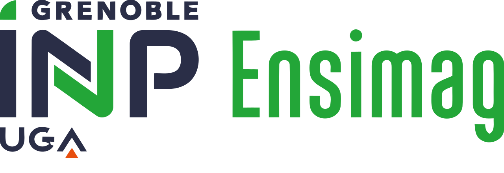
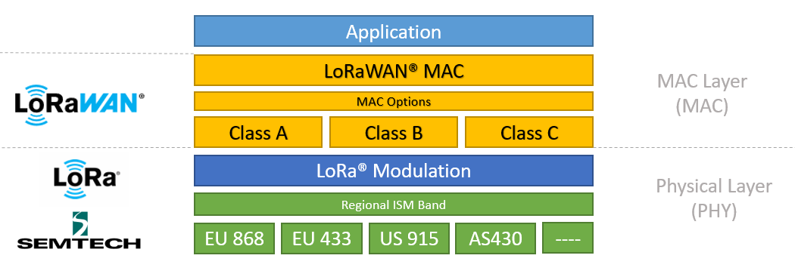
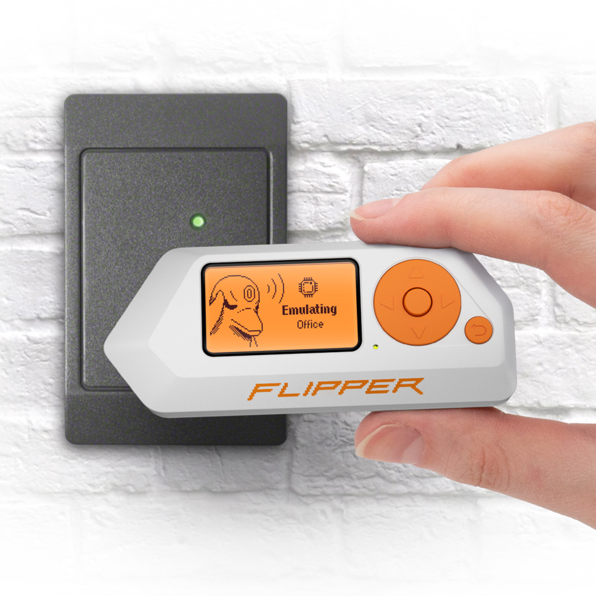
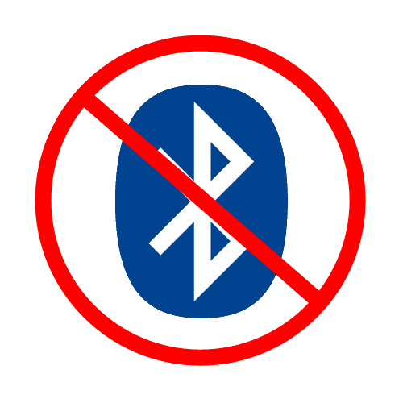
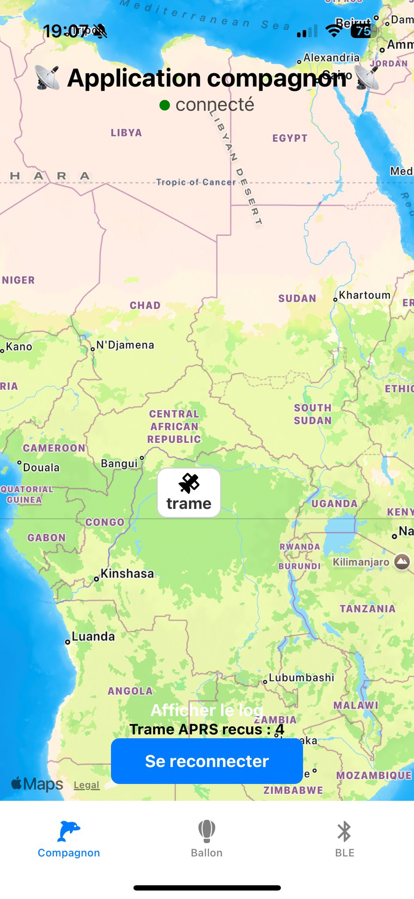
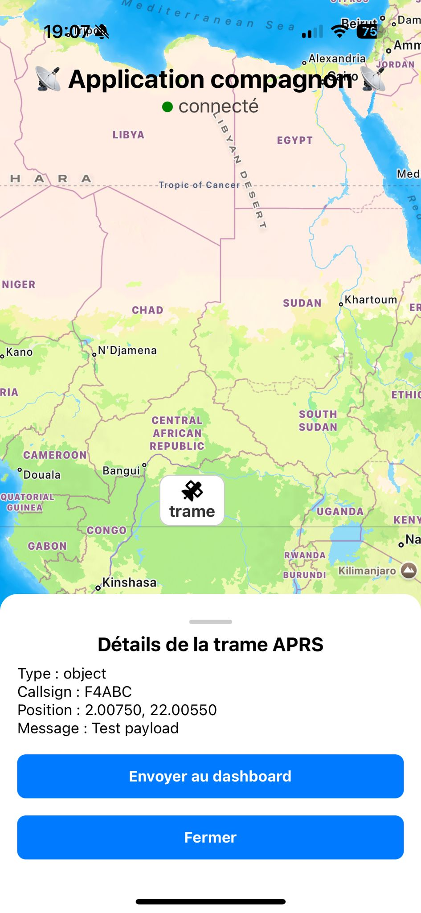
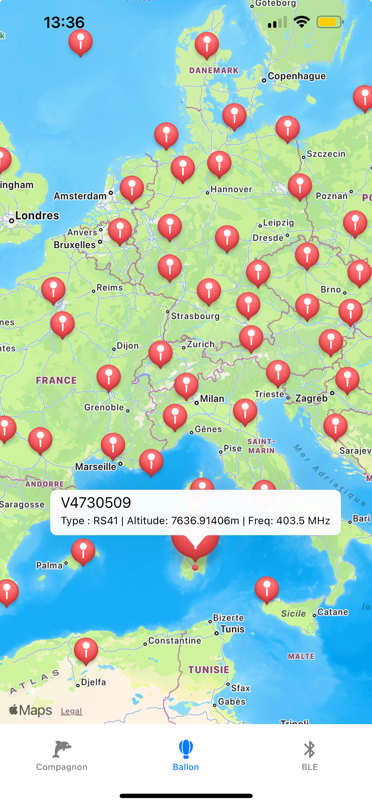
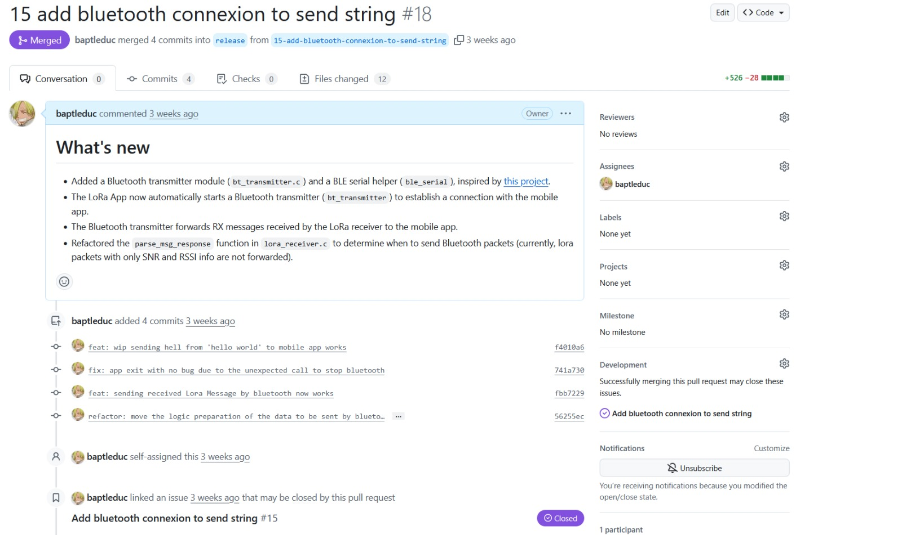
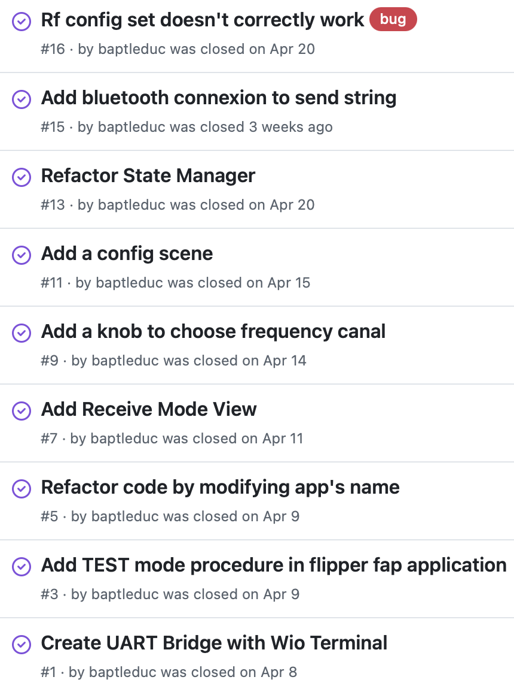

Testeurs de réseaux IoT satellitaires à base de Flipper Zero 🐬
Baptiste Le Duc - Nahel Belmadani
Sommaire
- Contexte
- Cahier des Charges
- Application Firmware Flipper
- Application compagnon
- Application ballons
- Méthodologie
- Démonstration
- Conclusion
Contexte
- 2 ballons météo/jour lancés par Météo-France
- Les sondes retombent au sol après usage.
- Problème : peu sont récupérées.
- Enjeu : pollution (électronique + piles lithium).
Comment localiser facilement ces sondes avec un dispositif léger et portable?
État des lieux des solutions actuelles
- RadioAmateurs: traquent le signal radio des sondes (modulation FSK)
- APRS-IS: réseau de stations radio qui transmettent des données de positionnement
- Réseau LoRa : peu déployée pour la localisation des sondes.
LoRa & LoRaWan
- LoRa : technologie radio au niveau physique (PHY) qui convertit les données en signaux radio.
- LoRaWAN : protocole au niveau MAC qui permet d’étendre l’utilisation des signaux LoRa à de larges réseaux et applications.
➔ Très utilisé dans l'IoT
LoRa Peer-to-Peer (P2P)
Avantages du LoRa P2P
- Extension de couverture : Chaînage des nœuds pour augmenter la portée sans infrastructure complète
- Réduction des coûts : Éviter les passerelles pour des projets petits ou expérimentaux
- Flexibilité : Les nœuds P2P peuvent aussi communiquer avec les passerelles
Flipper Zero
Cahier des charges
- Une application pour Flipper Zero
- Une application compagnon pour smartphone
- Une application compagnon pour suivre les ballons stratosphériques (Sondehub)
Aucune antenne n’émet actuellement de paquets APRS-IS en LoRa.
➔ Nécessité de créer une antenne simulée pour générer des paquets de test.
Cas d'utilisation

Diagramme Système

Antenne
Conception de l'antenne
- Objectif : Générer des paquets APRS-IS fictifs à intervalles réguliers
- Matériel : Carte de développement
LoRa-E5 Dev Board - Implémentation : Script Python
LoraSerialInterface
➔Lecture et envoi de commandes AT depuis un fichier .txt
Exemple fichier .txt de commandes
# Sample APRS trame extract from http://www.manuel.la-radio.eu/RM14/RM14T03.html
AT+TEST=RFCFG,868.1,SF8,125,8,8,14,ON,OFF,OFF
AT+TEST=TXLRSTR, "F4ABC-11>APRS,WIDE2-1:!4852.45N/00220.32E>000/000/A=035000 Balloon launch test"
AT+TEST=TXLRSTR, "F4ABC>APRS,TCPIP,qAC,T2FRANCE:;BALLOON1112345z4802.45N/00220.33E-Test payload"
AT+TEST=TXLRSTR, "F4ABC>APRS,WIDE1-1:_092300z4852.45N/00260.31E_000/000g005t017r000p000P000h55b10130"
Application Firmware Flipper
Modes de l'application
- OTAA Join : rejoint un réseau LoRaWAN via OTAA (hors scope)
- Receive Mode : mode LoRa P2P pour recevoir des trames
- Send CMsg : envoie un message à un serveur LoRaWAN (hors scope)

Communication AT entre le Flipper Zero et le module Wio-E5 via UART

Architecture Globale
Projet développé dans un style C objet
UartHelper: Interface avec le driver UARTLoraReceiver: Responsable du parsing des données reçues via sur l'UARTLoraTransmitter: Responsable de l'envoi de données via l'UARTStateManager: State-Machine maintenant l'état courant de l'applicationBtTransmitter: Responsable de l'envoi de data à l'application mobile par Bluetooth

Entrée dans le mode de réception
LoraTransmitter envoie 2 commandes :
AT+MODE=TEST(mode Lora P2P)AT+TEST=RFCFG,868.1...(configuration)


Configuration des paramètres de reception
- Fréquence, Spread Factor, Band Width, TX, RX, Power, CRC etc...
- Envoi de la configuration au module Wio-E5 via l'UART


Application mobile
Application mobile développée avec :
-
React Native
-
Expo
→

BLE
manager.startDeviceScan(null, null, async (error, device) => {
if (device?.name?.includes('Lora')) {
manager.stopDeviceScan();
try {
const connectedDevice = await device.connect();
await connectedDevice.discoverAllServicesAndCharacteristics();
}
}
});
Architecture BLE du Flipper
Flipper
Service
Characteristic (message)
[read]
- Le périphérique Flipper expose un service BLE principal
- Ce service contient une caractéristique "message" qui permet de:
- Lire les données (read)
Traitement des Données BLE
setMessages((prev) => [...prev, decoded]);
const parsedMessages = listMessages.map((message) => {
const parsedMessage = parseAprs(message);
});- Chaque paquet BLE reçu est décodé (base64)
- Les messages sont ajoutés à une liste en attente d’être parsés
Fonction de Parsing APRS
- Messages : Extraction des informations comme l'émetteur, le destinataire et le contenu du message.
- Objets : Extraction des coordonnées géographiques et des détails associés.
- Météo : Extraction des données météorologiques comme la température et l'humidité.
- Positions : Extraction des coordonnées GPS et de l'altitude.
- Plusieurs trames à la suite
"F4ABC-11>APRS,WIDE2-1:!4852.45N/00220.32E>000/000/A=035000 Balloon launch test"
{
type: 'position',
callsign: F4ABC,
ssid: -11
latitude: 48.8742° N
longitude: 2.3387° E
Altitude 35 000 ft
commentaire: 'Balloon launch test'
}Envoi des Données au Backend
const response = await fetch('https://pocfablab.osc-fr1.scalingo.io/api/position', {
method: 'POST',
headers: {
'Content-Type': 'application/json',
},
body: JSON.stringify(data),
});- Format JSON pour faciliter le traitement côté serveur
- API REST pour une architecture simple et robuste
- Hébergement sur Scalingo


Onglet sonde

Méthodologie
Pratiques Git dans notre projet
- Repos git séparés
- Issues, Pull Request
- Règles sur les noms de commits
- Formatage du code C avec
indent


Outils Utilisés
- GitHub
- Discord: entraide avec la communauté Flipper via un serveur dédié
- Reveal.js: slides de présentation
- PlantUml: diagrammes UML
Répartition du travail
- Baptiste Le Duc:
- Développement de l'antenne LoRa
- Développement de l'application firmware Flipper
- Nahel Belmadani:
- Développement de l'application compagnon
- Développement de l'application pour le suivi des ballons stratosphériques
Diagramme de Gantt
Démonstration
Conclusion
Difficultés :
- Compréhension du sujet
- Développement firmware (debug et programmation concurrente)
- Connexion Bluetooth Flipper / app mobile
- Coordination en équipe
Points positifs :
- Découverte de l’IoT et de la radio
- Communauté Flipper très active